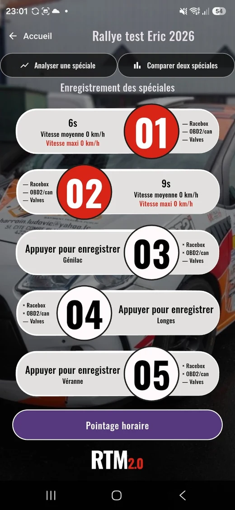
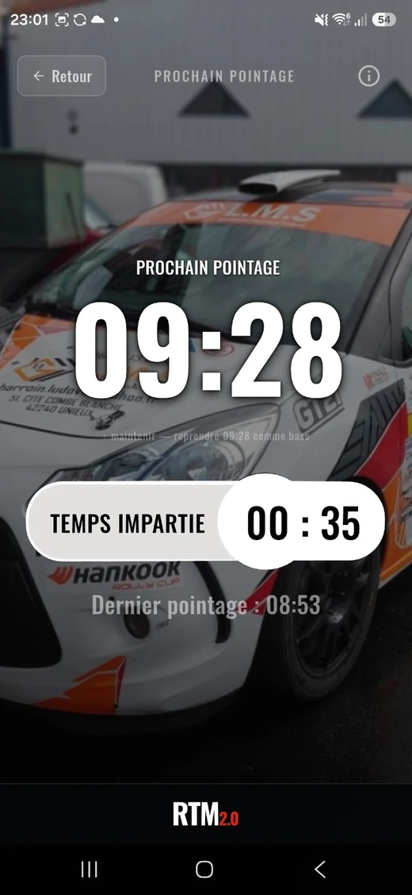
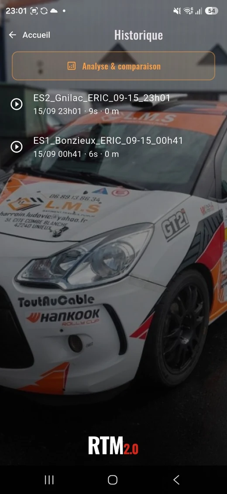
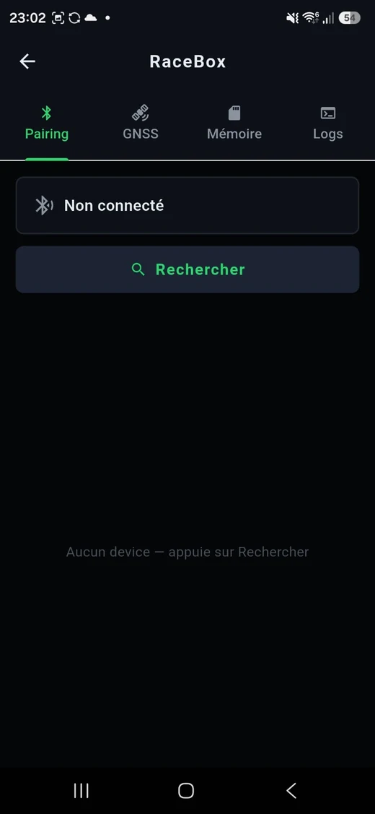
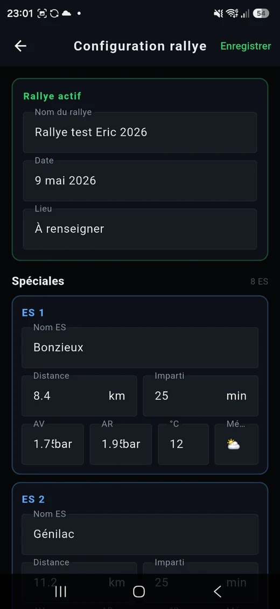

RTM · terrain · rallye
Lire une spéciale comme elle s’est réellement passée.
RTM est une application mobile conçue pour le rallye : préparation de l’épreuve, gestion des spéciales, pointage horaire, historique, analyse et connexion aux capteurs.
Androidtesté
iOStesté
GPSRaceBox
OBD2CAN






Pourquoi cette application existe
Le terrain comme test.
RTM ne vient pas d’un exercice de démonstration IA. L’application est née d’un besoin concret en rallye. Elle oblige à gérer du matériel, des données imparfaites, des interfaces mobiles et des contraintes réelles.
Dans Nex.IA, elle joue donc un rôle particulier : montrer que la branche Applied ne reste pas dans le navigateur.
UsageRallye point-à-point, préparation et analyse.
AcquisitionGPS / RaceBox, OBD2 / CAN selon configuration.
InterfaceFlutter, Android et iOS.
ÉtatInterface actuelle testée sur appareils réels ; développement toujours en cours.